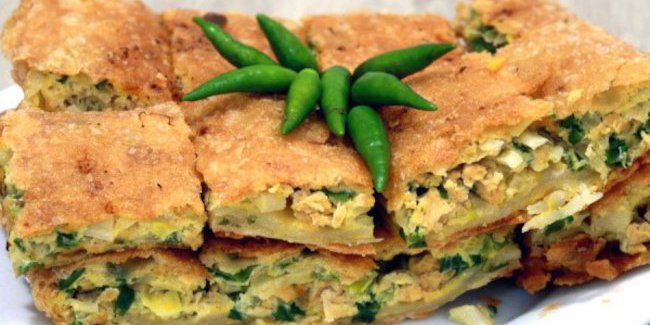

Salah satu makanan dan jajanan yang sangat populer di Indonesia dan bisa ditemukan hampir di semua wilayah negara kita adalah Resep Martabak. Ya, dengan mudah kita temukan penjual martabak telur, martabak manis dan martabak mini. Bahkan saat ini, beberasa resep turunan dari masakan satu ini, seperti resep martabak tahu, martabak telur tahu dan resep martabak mie pun banyak dicari orang. Seperti resep yang lain, kunci cara membuat martabak yang enak dan lezet selain isinya adalah cara membuat kulit martabak. Tentu saja, isinya pun juga penting, seperti daging cincang, daun bawang dan yang lainnya.
Bahan dan Bumbu Resep Martabak Telur Sederhana Spesial:
- -Bahan utama yang dibutuhkan adalah tepung terigu yang mempunyai kandungan protein sedang kurang lebih sebanyak 200 gram saja (bahan kulit martabak).
- -Garam dapur beryodium secukupnya atau kurang lebih sebanyak seperempat sampai setengah sendok kecil atau sendok teh.
- -Air bersih secukupnya atau kurang lebih sebanyak 140 ml.
- -Telur ayam 1 butir untuk membuat kulit martabaknya.
- -Minyak secukupnya untuk menggoreng martabaknya nanti dan 50 gram minyak untuk campuran bahan adonan kulitnya.
- -Daging sapi cincang kecil kecil atau bisa juga menggunakan daging giling kurang lebih sebanyak 200-250 gram saja.
- -Daun bawang segar kualitas bagus kurang lebih sebanyak 3-5 batang ukuran sedang besar. Cuci bersih sebelum digunakan dan iris halus halus untuk isi martabaknya.
- -Bawang putih ukuran sedang besar sebanyak 4 pcs. Kupas kulitnya lalu cincang bawang putihnya sampai benar benar halus untuk bahan isi martabak.
- -Bawang bombay ukuran sedang besar kualitas bagus sebanyak 1 buah pcs saja. Kupas kulitnya lalu iris halus untuk isi martabak.
- -Bawang merah lokal ukuran sedang besar kurang lebih sebanyak 8 pcs. Kupas kulitnya lalu iris iris halus/rajang untuk bahan isian martabaknya nanti.
- -Lada bubuk atau halus secukupnya sesuai selera atau kurang lebih sebanyak setengah sendok kecil.
- -Garam dapur beryodium dan bumbu penyedap rasa secukupnya.
- -Telur bebek atau telur ayam secukupnya atau kurang lebih sebanyak 4 pcs untuk membuat adonan diatas (1-2 butir per porsi).
Cara Membuat Martabak Telur Sederhana:
- 1.Langkah pertama adalah membuat kulit martabaknya.
- 2.Ambil satu wadah ukuran sedang besar. Masukkan tepung terigu protein sedang yang sudah dipersiapkan dan garam dapur beryodium. Aduk aduk sampai kedua bahan tercampur rata.
- 3.Pecahkan satu butir telur dan masukkan ke adonan tepung diatas. Aduk aduk sampai tercampur rata.
- 4.Masukkan air bersihnya sedikit demi sedikit sambil diaduk aduk menggunakan tangan/diuleni sampai adonan menjadi kalis. Tambahkan air bila diperlukan.
- 5.Bagi adonan menjadi 2 bagian lalu bentuk menjadi bulatan. Olesi bagian luar adonan dengan minyak lalu diamkan sebentar atau kurang lebih selama 10-13 menit.
- 6.Lapis bagian luar adonan kulit martabak dengan minyak lagi lalu taruh di baskom dan tutup dengan kain selama kurang lebih satu jam.
- 7.Langkah kedua adalah membuat isi martabaknya.
- 8.Siapkan penggorengan dan beri minyak sedikit saja.
- 9.Masukkan bawang merah, bawang putih dan bawang bombay yang sudah di rajang halus. Aduk aduk sebentar sampai tercium bau harum.
- 10.Masukkan daging cincang atau daging giling yang sudah dipersiapkan ke dalamnya. Aduk aduk semua bahan supaya tercampur rata sampai daging agak matang.
- 11.Masukkan daun bawang dan lada halus. Aduk aduk dan tumis lagi semua bahan sampai daging cincang matang.
- 12.Langkah terakhir adalah membuat martabak telurnya.
- 13.Ambil satu adonan kulit dan pipihkan dengan cara menekan dengan telapak tangan agak memutar sampai adonan melebar.
- 14.Pegang kedua ujung adonan kulit lalu putar dari kiri kekanan sampai adonan melebar lagi. Lakukan berulang sampai didapat lebar yang diinginkan dan adonan kulit martabak menjadi tipis.
- 15.Ambil bahan isian martabak secukupnya atau kira kira setengah bagian. Masukkan ke dalam kocokan telur dan tambahkan garam dapur, bumbu penyedap rasa apabila suka, aduk aduk sampai rata.
- 16.Tuang isian martabak ke atas kulit martabaknya.
- 17.Ambil bagian ujung kulit dan lipat ke tengahnya sampai tertutup rata. Goreng martabak dan bolak balik sampai matang dan berwarna kecoklatan.